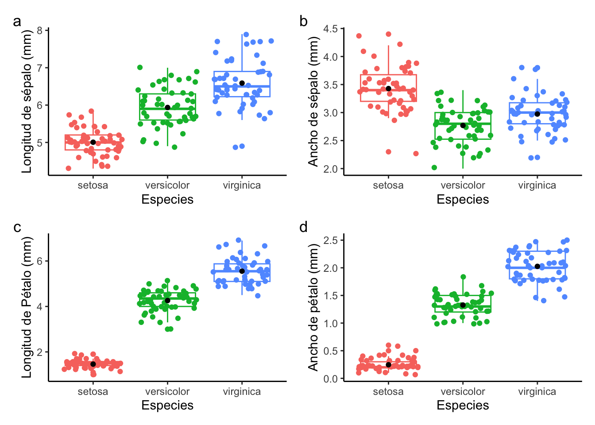

![]()
Introducción
El análisis de datos es una etapa esencial en el proceso de investigación y consiste en examinar y analizar los datos recopilados de manera detallada para extraer información y obtener conclusiones relevantes en función a los objetivos de la investigación. Para realizar el análisis de datos, se pueden utilizar diferentes herramientas y técnicas, generalmente se construyen tablas y figuras. Estos resultados son usados para tomar decisiones y formular conclusiones sobre los datos, y también pueden ser utilizados para mejorar y optimizar procesos y sistemas. El análisis de datos es importante ya que permite a los investigadores obtener una visión más profunda y detallada de los datos y tomar decisiones más informadas y precisas.
La etapa de análisis de datos puede resultar un reto difícil para un recien egresado o tesista. Esto debido a la falta de experiencia o conocimiento en el uso de herramientas y técnicas de análisis de datos. Debido a ello, queremos facilitar algunas herramientas de análisis, al mismo tiempo, se pretende que los interesados puedan entrenarse en el uso de R. Ya que esta herramienta estadística ofrece un sin fin de paquetes que nos ayudan a realizar los análisis de manera sencilla pero de mucha categoría científica.
Análisis de datos
Librerias
Base de datos
Para esta oportunidad daremos uso de la base de datos de iris. Estos datos estarán disponibles al momento de instalar R.
Sepal.Length Sepal.Width Petal.Length Petal.Width Species
1 5.1 3.5 1.4 0.2 setosa
2 4.9 3.0 1.4 0.2 setosa
3 4.7 3.2 1.3 0.2 setosa
4 4.6 3.1 1.5 0.2 setosa
5 5.0 3.6 1.4 0.2 setosa
6 5.4 3.9 1.7 0.4 setosa Species Sepal.Length Sepal.Width Petal.Length Petal.Width
1 setosa 5.1 3.5 1.4 0.2
2 setosa 4.9 3.0 1.4 0.2
3 setosa 4.7 3.2 1.3 0.2
4 setosa 4.6 3.1 1.5 0.2
5 setosa 5.0 3.6 1.4 0.2
6 setosa 5.4 3.9 1.7 0.4Análisis descriptivo
Generalmente se puede presentar en una tabla los resultados descriptivos.
| variable | mean | se | kurt | skew | min | max |
|---|---|---|---|---|---|---|
| Petal.Length | 3.7580 | 0.1441 | -1.4021 | -0.2749 | 1.0 | 6.9 |
| Petal.Width | 1.1993 | 0.0622 | -1.3406 | -0.1030 | 0.1 | 2.5 |
| Sepal.Length | 5.8433 | 0.0676 | -0.5521 | 0.3149 | 4.3 | 7.9 |
| Sepal.Width | 3.0573 | 0.0356 | 0.2282 | 0.3190 | 2.0 | 4.4 |
La otra opción podría ser una figura boxplot

Análisis de varianza
Generalmente en la mayoría de las tesis se presenta cada ANOVA para cada variable, la cual no es muy redundante en todo el documento. Además, en las revistas científicas de impacto, este tipo de tablas no es permitido si se tiene varias variables.
Analysis of Variance Table
Response: Sepal.Width
Df Sum Sq Mean Sq F value Pr(>F)
Species 2 11.345 5.6725 49.16 < 2.2e-16 ***
Residuals 147 16.962 0.1154
---
Signif. codes: 0 '***' 0.001 '**' 0.01 '*' 0.05 '.' 0.1 ' ' 1Sin embargo, se podría resumir de esta manera. En la tabla solamente se presenta aquellas variables con significancia estadística.
# A tibble: 2 × 6
FV DF Sepal.Length Sepal.Width Petal.Length Petal.Width
<chr> <dbl> <chr> <chr> <chr> <chr>
1 Species 2 "31.61 **" "5.67 **" "218.55 **" "40.21 **"
2 Residuals 147 "0.27 " "0.12 " "0.19 " "0.04 " Citation
@online{santos2023,
author = {Franklin Santos},
title = {Análisis de Datos Experimentales Agrícolas},
date = {2023-01-01},
url = {https://www.franklinsantos.com/posts/agridata},
langid = {en}
}